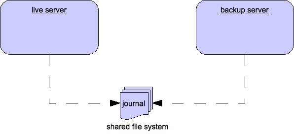

High Availability and Failover
We define high availability as the ability for the system to continue functioning after failure of one or more of the servers.
A part of high availability is failover which we define as the ability for client connections to migrate from one server to another in event of server failure so client applications can continue to operate.
Live - Backup Groups
Apache ActiveMQ Artemis allows servers to be linked together as live - backup groups where each live server can have 1 or more backup servers. A backup server is owned by only one live server. Backup servers are not operational until failover occurs, however 1 chosen backup, which will be in passive mode, announces its status and waits to take over the live servers work
Before failover, only the live server is serving the Apache ActiveMQ Artemis clients while the backup servers remain passive or awaiting to become a backup server. When a live server crashes or is brought down in the correct mode, the backup server currently in passive mode will become live and another backup server will become passive. If a live server restarts after a failover then it will have priority and be the next server to become live when the current live server goes down, if the current live server is configured to allow automatic failback then it will detect the live server coming back up and automatically stop.
HA Policies
Apache ActiveMQ Artemis supports two different strategies for backing up a server
shared store and replication. Which is configured via the
ha-policy configuration element.
<ha-policy>
<replication/>
</ha-policy>
or
<ha-policy>
<shared-store/>
</ha-policy>
As well as these 2 strategies there is also a 3rd called live-only.
This of course means there will be no Backup Strategy and is the default
if none is provided, however this is used to configure scale-down
which we will cover in a later chapter.
Note:
The
ha-policyconfigurations replaces any current HA configuration in the root of thebroker.xmlconfiguration. All old configuration is now deprecated although best efforts will be made to honour it if configured this way.Note:
Only persistent message data will survive failover. Any non persistent message data will not be available after failover.
The ha-policy type configures which strategy a cluster should use to
provide the backing up of a server's data. Within this configuration
element we configure how a server should behave within the cluster,
either as a master (live), slave (backup) or colocated (both live and
backup). This would look something like:
<ha-policy>
<replication>
<master/>
</replication>
</ha-policy>
or
<ha-policy>
<shared-store>
<slave/>
</shared-store>
</ha-policy>
or
<ha-policy>
<replication>
<colocated/>
</replication>
</ha-policy>
Replication allows the configuration of two new roles to enable pluggable quorum provider configuration, by using:
<ha-policy>
<replication>
<primary/>
</replication>
</ha-policy>
to configure the classic master role, and
<ha-policy>
<replication>
<backup/>
</replication>
</ha-policy>
for the classic slave one.
If replication is configured using such new roles some additional element are required to complete configuration as detailed later.
IMPORTANT NOTE ON PLUGGABLE QUORUM VOTE FEATURE
This feature is still EXPERIMENTAL. Extra testing should be done before running this feature into production. Please raise issues eventually found to the ActiveMQ Artemis Mail Lists.
It means:
- it's configuration can change until declared as officially stable
Data Replication
When using replication, the live and the backup servers do not share the same data directories, all data synchronization is done over the network. Therefore all (persistent) data received by the live server will be duplicated to the backup.
Notice that upon start-up the backup server will first need to synchronize all existing data from the live server before becoming capable of replacing the live server should it fail. So unlike when using shared storage, a replicating backup will not be a fully operational backup right after start-up, but only after it finishes synchronizing the data with its live server. The time it will take for this to happen will depend on the amount of data to be synchronized and the connection speed.
Note:
In general, synchronization occurs in parallel with current network traffic so this won't cause any blocking on current clients. However, there is a critical moment at the end of this process where the replicating server must complete the synchronization and ensure the replica acknowledges this completion. This exchange between the replicating server and replica will block any journal related operations. The maximum length of time that this exchange will block is controlled by the
initial-replication-sync-timeoutconfiguration element.
Replication will create a copy of the data at the backup. One issue to be aware of is: in case of a successful fail-over, the backup's data will be newer than the one at the live's storage. If you configure your live server to perform a failback to live server when restarted, it will synchronize its data with the backup's. If both servers are shutdown, the administrator will have to determine which one has the latest data.
The replicating live and backup pair must be part of a cluster. The Cluster Connection also defines how backup servers will find the remote live servers to pair with. Refer to Clusters for details on how this is done, and how to configure a cluster connection. Notice that:
Both live and backup servers must be part of the same cluster. Notice that even a simple live/backup replicating pair will require a cluster configuration.
Their cluster user and password must match.
Within a cluster, there are two ways that a backup server will locate a live server to replicate from, these are:
specifying a node group. You can specify a group of live servers that a backup server can connect to. This is done by configuringgroup-namein either themasteror theslaveelement of thebroker.xml. A Backup server will only connect to a live server that shares the same node group nameconnecting to any live. This will be the behaviour ifgroup-nameis not configured allowing a backup server to connect to any live server
Note:
A
group-nameexample: suppose you have 5 live servers and 6 backup servers:
live1,live2,live3: withgroup-name=fish
live4,live5: withgroup-name=bird
backup1,backup2,backup3,backup4: withgroup-name=fish
backup5,backup6: withgroup-name=birdAfter joining the cluster the backups with
group-name=fishwill search for live servers withgroup-name=fishto pair with. Since there is one backup too many, thefishwill remain with one spare backup.The 2 backups with
group-name=bird(backup5andbackup6) will pair with live serverslive4andlive5.
The backup will search for any live server that it is configured to connect to. It then tries to replicate with each live server in turn until it finds a live server that has no current backup configured. If no live server is available it will wait until the cluster topology changes and repeats the process.
Note:
This is an important distinction from a shared-store backup, if a backup starts and does not find a live server, the server will just activate and start to serve client requests. In the replication case, the backup just keeps waiting for a live server to pair with. Note that in replication the backup server does not know whether any data it might have is up to date, so it really cannot decide to activate automatically. To activate a replicating backup server using the data it has, the administrator must change its configuration to make it a live server by changing
slavetomaster.
Much like in the shared-store case, when the live server stops or crashes, it's replicating backup will become active and take over its duties. Specifically, the backup will become active when it loses connection to its live server. This can be problematic because it can also happen as the result of temporary network problem.
The issue can be solved in two different ways, depending on which replication roles are configured:
- classic replication (
master/slaveroles): backup will try to determine whether it still can connect to the other servers in the cluster. If it can connect to more than half the servers, it will become active, if more than half the servers also disappeared with the live, the backup will wait and try reconnecting with the live. This avoids a split brain situation. - pluggable quorum vote replication (
primary/backuproles): backup relies on a pluggable quorum provider (configurable viamanagerxml element) to detect if there's any active live.
NOTE
A backup in the pluggable quorum vote replication still need to carefully configure connection-ttl in order to promptly issue a request to become live to the quorum service before failing-over.
Configuration
To configure a classic replication's live and backup servers to be a replicating pair,
configure the live server in ' broker.xml to have:
<ha-policy>
<replication>
<master/>
</replication>
</ha-policy>
...
<cluster-connections>
<cluster-connection name="my-cluster">
...
</cluster-connection>
</cluster-connections>
The backup server must be similarly configured but as a slave
<ha-policy>
<replication>
<slave/>
</replication>
</ha-policy>
To configure a pluggable quorum replication's primary and backup use:
<ha-policy>
<replication>
<primary/>
</replication>
</ha-policy>
...
<cluster-connections>
<cluster-connection name="my-cluster">
...
</cluster-connection>
</cluster-connections>
and
<ha-policy>
<replication>
<backup/>
</replication>
</ha-policy>
All Replication Configuration
The following table lists all the ha-policy configuration elements for
HA strategy Replication for master:
check-for-live-server
Whether to check the cluster for a (live) server using our own server
ID when starting up. This is an important option to avoid split-brain
when failover happens and the master is restarted. Default is false.
cluster-name
Name of the cluster configuration to use for replication. This setting
is only necessary if you configure multiple cluster connections. If
configured then the connector configuration of the cluster
configuration with this name will be used when connecting to the
cluster to discover if a live server is already running, see
check-for-live-server. If unset then the default cluster connections
configuration is used (the first one configured).
group-name
If set, backup servers will only pair with live servers with matching group-name.
initial-replication-sync-timeout
The amount of time the replicating server will wait at the completion of the initial replication process for the replica to acknowledge it has received all the necessary data. The default is 30,000 milliseconds. Note: during this interval any journal related operations will be blocked.
The following table lists all the ha-policy configuration elements for
HA strategy Replication for slave:
cluster-name
Name of the cluster configuration to use for replication. This setting
is only necessary if you configure multiple cluster connections. If
configured then the connector configuration of the cluster
configuration with this name will be used when connecting to the
cluster to discover if a live server is already running, see
check-for-live-server. If unset then the default cluster connections
configuration is used (the first one configured).
group-name
If set, backup servers will only pair with live servers with matching group-name
max-saved-replicated-journals-size
This specifies how many times a replicated backup server can restart after moving its files on start. Once there are this number of backup journal files the server will stop permanently after if fails back.
allow-failback
Whether a server will automatically stop when another places a request to take over its place. The use case is when the backup has failed over.
initial-replication-sync-timeout
After failover and the slave has become live, this is set on the new live server. It represents the amount of time the replicating server will wait at the completion of the initial replication process for the replica to acknowledge it has received all the necessary data. The default is 30,000 milliseconds. Note: during this interval any journal related operations will be blocked.
Pluggable Quorum Vote Replication configurations
Pluggable Quorum Vote replication configuration options are a bit different from classic replication, mostly because of its customizable nature.
Apache curator is used by the default quorum provider.
Below some example configurations to show how it works.
For primary:
<ha-policy>
<replication>
<primary>
<manager>
<class-name>org.apache.activemq.artemis.quorum.zookeeper.CuratorDistributedPrimitiveManager</class-name>
<properties>
<property key="connect-string" value="127.0.0.1:6666,127.0.0.1:6667,127.0.0.1:6668"/>
</properties>
</manager>
</primary>
</replication>
</ha-policy>
And backup:
<ha-policy>
<replication>
<backup>
<manager>
<class-name>org.apache.activemq.artemis.quorum.zookeeper.CuratorDistributedPrimitiveManager</class-name>
<properties>
<property key="connect-string" value="127.0.0.1:6666,127.0.0.1:6667,127.0.0.1:6668"/>
</properties>
</manager>
<allow-failback>true</allow-failback>
</backup>
</replication>
</ha-policy>
The configuration of class-name as follows
<class-name>org.apache.activemq.artemis.quorum.zookeeper.CuratorDistributedPrimitiveManager</class-name>
isn't really needed, because Apache Curator is the default provider, but has been shown for completeness.
The properties element:
<properties>
<property key="connect-string" value="127.0.0.1:6666,127.0.0.1:6667,127.0.0.1:6668"/>
</properties>
can specify a list of property elements in the form of key-value pairs, appropriate to what is
supported by the specified class-name provider.
Apache Curator's provider allows the following properties:
connect-string): (no default)session-ms): (default is 18000 ms)session-percent): (default is 33); should be <= default, see https://cwiki.apache.org/confluence/display/CURATOR/TN14 for more infoconnection-ms): (default is 8000 ms)retries): (default is 1)retries-ms): (default is 1000 ms)namespace): (no default)
Configuration of the Apache Zookeeper ensemble is the responsibility of the user, but there are few suggestions to improve the reliability of the quorum service:
- broker
session_msmust be>= 2 * server tick timeand<= 20 * server tick timeas by Zookeeper 3.6.3 admin guide: it directly impacts how fast a backup can failover to an isolated/killed/unresponsive live; the higher, the slower. - GC on broker machine should allow keeping GC pauses within 1/3 of
session_msin order to let the Zookeeper heartbeat protocol work reliably. If that is not possible, it is better to increasesession_ms, accepting a slower failover. - Zookeeper must have enough resources to keep GC (and OS) pauses much smaller than server tick time: please consider carefully if broker and Zookeeper node should share the same physical machine, depending on the expected load of the broker
- network isolation protection requires configuring >=3 Zookeeper nodes
Important: Notes on pluggable quorum replication configuration
There are some no longer needed classic replication configurations:
vote-on-replication-failurequorum-vote-waitvote-retriesvote-retries-waitcheck-for-live-server
Notes on replication configuration with Apache curator quorum provider
As said some paragraphs above, session-ms affect the failover duration: a backup can
failover after session-ms expires or if the live broker voluntary give up its role
eg during a fail-back/manual broker stop, it happens immediately.
For the former case (session expiration with live no longer present), the backup broker can detect an unresponsive live by using:
- cluster connection PINGs (affected by connection-ttl tuning)
- closed TCP connection notification (depends by TCP configuration and networking stack/topology)
The suggestion is to tune connection-ttl low enough to attempt failover as soon as possible, while taking in consideration that
the whole fail-over duration cannot last less than the configured session-ms.
Peer or Multi Primary
With coordination delegated to the quorum service, roles are less important. It is possible to have two peer servers compete for activation; the winner activating as live, the looser taking up a backup role. On restart, 'any' peer server with the most up to date journal can activate. The instances need to know in advance, what identity they will coordinate on. In the replication 'primary' ha policy we can explicitly set the 'coordination-id' to a common value for all peers in a cluster.
For multi primary:
<ha-policy>
<replication>
<primary>
<manager>
<class-name>org.apache.activemq.artemis.quorum.zookeeper.CuratorDistributedPrimitiveManager</class-name>
<properties>
<property key="connect-string" value="127.0.0.1:6666,127.0.0.1:6667,127.0.0.1:6668"/>
</properties>
</manager>
<coordination-id>peer-journal-001</coordination-id>
</primary>
</replication>
</ha-policy>
Note: the string value provided will be converted internally into a 16 byte UUID, so it may not be immediately recognisable or human-readable, however it will ensure that all 'peers' coordinate.
Shared Store
When using a shared store, both live and backup servers share the same entire data directory using a shared file system. This means the paging directory, journal directory, large messages and binding journal.
When failover occurs and a backup server takes over, it will load the persistent storage from the shared file system and clients can connect to it.
This style of high availability differs from data replication in that it requires a shared file system which is accessible by both the live and backup nodes. Typically this will be some kind of high performance Storage Area Network (SAN). We do not recommend you use Network Attached Storage (NAS), e.g. NFS mounts to store any shared journal (NFS is slow).
The advantage of shared-store high availability is that no replication occurs between the live and backup nodes, this means it does not suffer any performance penalties due to the overhead of replication during normal operation.
The disadvantage of shared store replication is that it requires a shared file system, and when the backup server activates it needs to load the journal from the shared store which can take some time depending on the amount of data in the store.
If you require the highest performance during normal operation, have access to a fast SAN and live with a slightly slower failover (depending on amount of data).

Configuration
To configure the live and backup servers to share their store, configure
id via the ha-policy configuration in broker.xml:
<ha-policy>
<shared-store>
<master/>
</shared-store>
</ha-policy>
...
<cluster-connections>
<cluster-connection name="my-cluster">
...
</cluster-connection>
</cluster-connections>
The backup server must also be configured as a backup.
<ha-policy>
<shared-store>
<slave/>
</shared-store>
</ha-policy>
In order for live - backup groups to operate properly with a shared store, both servers must have configured the location of journal directory to point to the same shared location (as explained in Configuring the message journal)
Note:
todo write something about GFS
Also each node, live and backups, will need to have a cluster connection defined even if not part of a cluster. The Cluster Connection info defines how backup servers announce there presence to its live server or any other nodes in the cluster. Refer to Clusters for details on how this is done.
Failing Back to live Server
After a live server has failed and a backup taken has taken over its duties, you may want to restart the live server and have clients fail back.
In case of "shared disk", simply restart the original live server and
kill the new live server. You can do this by killing the process itself.
Alternatively you can set allow-fail-back to true on the slave
config which will force the backup that has become live to automatically
stop. This configuration would look like:
<ha-policy>
<shared-store>
<slave>
<allow-failback>true</allow-failback>
</slave>
</shared-store>
</ha-policy>
The same configuration option can be set for both replications, classic:
<ha-policy>
<replication>
<slave>
<allow-failback>true</allow-failback>
</slave>
</replication>
</ha-policy>
and with pluggable quorum provider:
<ha-policy>
<replication>
<manager>
<!-- some meaningful configuration -->
</manager>
<backup>
<allow-failback>true</allow-failback>
</backup>
</replication>
</ha-policy>
In both replication HA mode you need to set an extra property
check-for-live-server to true in the master/primary configuration. If set
to true, during start-up a live server will first search the cluster for
another server using its nodeID. If it finds one, it will contact this
server and try to "fail-back". Since this is a remote replication
scenario, the "starting live" will have to synchronize its data with the
server running with its ID, once they are in sync, it will request the
other server (which it assumes it is a backup that has assumed its duties)
to shutdown, for it to take over. This is necessary because otherwise the
live server has no means to know whether there was a fail-over or not,
and if there was, if the server that took its duties is still running or
not. To configure this option at your broker.xml
configuration file as follows, for classic replication:
<ha-policy>
<replication>
<master>
<check-for-live-server>true</check-for-live-server>
</master>
</replication>
</ha-policy>
And pluggable quorum replication:
<ha-policy>
<replication>
<manager>
<!-- some meaningful configuration -->
</manager>
<primary>
<!-- no need to check-for-live-server anymore -->
</primary>
</replication>
</ha-policy>
The key difference from classic replication is that if master cannot reach any
live server with its nodeID, it activates unilaterally.
With primary, the responsibilities of coordination are delegated to the quorum provider,
there are no unilateral decisions. The primary will only activate when
it knows that it has the most up to date version of the journal identified by its nodeID.
In short: a started primary cannot become live without consensus.
Warning for classic replication
Be aware that if you restart a live server while after failover has occurred then
check-for-live-servermust be set totrue. If not the live server will restart and server the same messages that the backup has already handled causing duplicates.
It is also possible, in the case of shared store, to cause failover to
occur on normal server shutdown, to enable this set the following
property to true in the ha-policy configuration on either the master
or slave like so:
<ha-policy>
<shared-store>
<master>
<failover-on-shutdown>true</failover-on-shutdown>
</master>
</shared-store>
</ha-policy>
By default this is set to false, if by some chance you have set this to false but still want to stop the server normally and cause failover then you can do this by using the management API as explained at Management
You can also force the running live server to shutdown when the old live
server comes back up allowing the original live server to take over
automatically by setting the following property in the
broker.xml configuration file as follows:
<ha-policy>
<shared-store>
<slave>
<allow-failback>true</allow-failback>
</slave>
</shared-store>
</ha-policy>
All Shared Store Configuration
The following table lists all the ha-policy configuration elements for
HA strategy shared store for master:
failover-on-shutdownIf set to true then when this server is stopped normally the backup will become live assuming failover. If false then the backup server will remain passive. Note that if false you want failover to occur the you can use the management API as explained at Management.
wait-for-activationIf set to true then server startup will wait until it is activated. If set to false then server startup will be done in the background. Default is true.
The following table lists all the ha-policy configuration elements for
HA strategy Shared Store for slave:
failover-on-shutdownIn the case of a backup that has become live. then when set to true then when this server is stopped normally the backup will become liveassuming failover. If false then the backup server will remain passive. Note that if false you want failover to occur the you can use the management API as explained at Management.
allow-failbackWhether a server will automatically stop when another places a request to take over its place. The use case is when the backup has failed over.
Colocated Backup Servers
It is also possible when running standalone to colocate backup servers
in the same JVM as another live server. Live Servers can be configured
to request another live server in the cluster to start a backup server
in the same JVM either using shared store or replication. The new backup
server will inherit its configuration from the live server creating it
apart from its name, which will be set to colocated_backup_n where n
is the number of backups the server has created, and any directories and
its Connectors and Acceptors which are discussed later on in this
chapter. A live server can also be configured to allow requests from
backups and also how many backups a live server can start. this way you
can evenly distribute backups around the cluster. This is configured via
the ha-policy element in the broker.xml file like
so:
<ha-policy>
<replication>
<colocated>
<request-backup>true</request-backup>
<max-backups>1</max-backups>
<backup-request-retries>-1</backup-request-retries>
<backup-request-retry-interval>5000</backup-request-retry-interval>
<master/>
<slave/>
</colocated>
</replication>
</ha-policy>
the above example is configured to use replication, in this case the
master and slave configurations must match those for normal
replication as in the previous chapter. shared-store is also supported

Configuring Connectors and Acceptors
If the HA Policy is colocated then connectors and acceptors will be
inherited from the live server creating it and offset depending on the
setting of backup-port-offset configuration element. If this is set to
say 100 (which is the default) and a connector is using port 61616 then
this will be set to 61716 for the first server created, 61816 for the
second, and so on.
Note:
for INVM connectors and Acceptors the id will have
colocated_backup_nappended, where n is the backup server number.
Remote Connectors
It may be that some of the Connectors configured are for external
servers and hence should be excluded from the offset. for instance a
connector used by the cluster connection to do quorum voting for a
replicated backup server, these can be omitted from being offset by
adding them to the ha-policy configuration like so:
<ha-policy>
<replication>
<colocated>
<excludes>
<connector-ref>remote-connector</connector-ref>
</excludes>
.........
</ha-policy>
Configuring Directories
Directories for the Journal, Large messages and Paging will be set according to what the HA strategy is. If shared store the requesting server will notify the target server of which directories to use. If replication is configured then directories will be inherited from the creating server but have the new backups name appended.
The following table lists all the ha-policy configuration elements for colocated policy:
request-backupIf true then the server will request a backup on another node
backup-request-retriesHow many times the live server will try to request a backup, -1 means for ever.
backup-request-retry-intervalHow long to wait for retries between attempts to request a backup server.
max-backupsHow many backups a live server can create
backup-port-offsetThe offset to use for the Connectors and Acceptors when creating a new backup server.
Scaling Down
An alternative to using Live/Backup groups is to configure scaledown. when configured for scale down a server can copy all its messages and transaction state to another live server. The advantage of this is that you dont need full backups to provide some form of HA, however there are disadvantages with this approach the first being that it only deals with a server being stopped and not a server crash. The caveat here is if you configure a backup to scale down.
Another disadvantage is that it is possible to lose message ordering. This happens in the following scenario, say you have 2 live servers and messages are distributed evenly between the servers from a single producer, if one of the servers scales down then the messages sent back to the other server will be in the queue after the ones already there, so server 1 could have messages 1,3,5,7,9 and server 2 would have 2,4,6,8,10, if server 2 scales down the order in server 1 would be 1,3,5,7,9,2,4,6,8,10.

The configuration for a live server to scale down would be something like:
<ha-policy>
<live-only>
<scale-down>
<connectors>
<connector-ref>server1-connector</connector-ref>
</connectors>
</scale-down>
</live-only>
</ha-policy>
In this instance the server is configured to use a specific connector to scale down, if a connector is not specified then the first INVM connector is chosen, this is to make scale down fromm a backup server easy to configure. It is also possible to use discovery to scale down, this would look like:
<ha-policy>
<live-only>
<scale-down>
<discovery-group-ref discovery-group-name="my-discovery-group"/>
</scale-down>
</live-only>
</ha-policy>
Scale Down with groups
It is also possible to configure servers to only scale down to servers that belong in the same group. This is done by configuring the group like so:
<ha-policy>
<live-only>
<scale-down>
...
<group-name>my-group</group-name>
</scale-down>
</live-only>
</ha-policy>
In this scenario only servers that belong to the group my-group will
be scaled down to
Scale Down and Backups
It is also possible to mix scale down with HA via backup servers. If a
slave is configured to scale down then after failover has occurred,
instead of starting fully the backup server will immediately scale down
to another live server. The most appropriate configuration for this is
using the colocated approach. it means as you bring up live server
they will automatically be backed up by server and as live servers are
shutdown, there messages are made available on another live server. A
typical configuration would look like:
<ha-policy>
<replication>
<colocated>
<backup-request-retries>44</backup-request-retries>
<backup-request-retry-interval>33</backup-request-retry-interval>
<max-backups>3</max-backups>
<request-backup>false</request-backup>
<backup-port-offset>33</backup-port-offset>
<master>
<group-name>purple</group-name>
<check-for-live-server>true</check-for-live-server>
<cluster-name>abcdefg</cluster-name>
</master>
<slave>
<group-name>tiddles</group-name>
<max-saved-replicated-journals-size>22</max-saved-replicated-journals-size>
<cluster-name>33rrrrr</cluster-name>
<restart-backup>false</restart-backup>
<scale-down>
<!--a grouping of servers that can be scaled down to-->
<group-name>boo!</group-name>
<!--either a discovery group-->
<discovery-group-ref discovery-group-name="wahey"/>
</scale-down>
</slave>
</colocated>
</replication>
</ha-policy>
Scale Down and Clients
When a server is stopping and preparing to scale down it will send a message to all its clients informing them which server it is scaling down to before disconnecting them. At this point the client will reconnect however this will only succeed once the server has completed scaledown. This is to ensure that any state such as queues or transactions are there for the client when it reconnects. The normal reconnect settings apply when the client is reconnecting so these should be high enough to deal with the time needed to scale down.
Failover Modes
Apache ActiveMQ Artemis defines two types of client failover:
Automatic client failover
Application-level client failover
Apache ActiveMQ Artemis also provides 100% transparent automatic reattachment of connections to the same server (e.g. in case of transient network problems). This is similar to failover, except it is reconnecting to the same server and is discussed in Client Reconnection and Session Reattachment
During failover, if the client has consumers on any non persistent or temporary queues, those queues will be automatically recreated during failover on the backup node, since the backup node will not have any knowledge of non persistent queues.
Automatic Client Failover
Apache ActiveMQ Artemis clients can be configured to receive knowledge of all live and backup servers, so that in event of connection failure at the client - live server connection, the client will detect this and reconnect to the backup server. The backup server will then automatically recreate any sessions and consumers that existed on each connection before failover, thus saving the user from having to hand-code manual reconnection logic.
Apache ActiveMQ Artemis clients detect connection failure when it has not received
packets from the server within the time given by
client-failure-check-period as explained in section Detecting Dead Connections. If the client
does not receive data in good time, it will assume the connection has
failed and attempt failover. Also if the socket is closed by the OS,
usually if the server process is killed rather than the machine itself
crashing, then the client will failover straight away.
Apache ActiveMQ Artemis clients can be configured to discover the list of live-backup server groups in a number of different ways. They can be configured explicitly or probably the most common way of doing this is to use server discovery for the client to automatically discover the list. For full details on how to configure server discovery, please see Clusters. Alternatively, the clients can explicitly connect to a specific server and download the current servers and backups see Clusters.
To enable automatic client failover, the client must be configured to allow non-zero reconnection attempts (as explained in Client Reconnection and Session Reattachment).
By default failover will only occur after at least one connection has been made to the live server. In other words, by default, failover will not occur if the client fails to make an initial connection to the live server - in this case it will simply retry connecting to the live server according to the reconnect-attempts property and fail after this number of attempts.
Failing over on the Initial Connection
Since the client does not learn about the full topology until after the
first connection is made there is a window where it does not know about
the backup. If a failure happens at this point the client can only try
reconnecting to the original live server. To configure how many attempts
the client will make you can set the URL parameter initialConnectAttempts.
The default for this is 0, that is try only once. Once the number of
attempts has been made an exception will be thrown.
For examples of automatic failover with transacted and non-transacted JMS sessions, please see the examples chapter.
A Note on Server Replication
Apache ActiveMQ Artemis does not replicate full server state between live and backup servers. When the new session is automatically recreated on the backup it won't have any knowledge of messages already sent or acknowledged in that session. Any in-flight sends or acknowledgements at the time of failover might also be lost.
By replicating full server state, theoretically we could provide a 100% transparent seamless failover, which would avoid any lost messages or acknowledgements, however this comes at a great cost: replicating the full server state (including the queues, session, etc.). This would require replication of the entire server state machine; every operation on the live server would have to replicated on the replica server(s) in the exact same global order to ensure a consistent replica state. This is extremely hard to do in a performant and scalable way, especially when one considers that multiple threads are changing the live server state concurrently.
It is possible to provide full state machine replication using techniques such as virtual synchrony, but this does not scale well and effectively serializes all operations to a single thread, dramatically reducing concurrency.
Other techniques for multi-threaded active replication exist such as replicating lock states or replicating thread scheduling but this is very hard to achieve at a Java level.
Consequently it has decided it was not worth massively reducing performance and concurrency for the sake of 100% transparent failover. Even without 100% transparent failover, it is simple to guarantee once and only once delivery, even in the case of failure, by using a combination of duplicate detection and retrying of transactions. However this is not 100% transparent to the client code.
Handling Blocking Calls During Failover
If the client code is in a blocking call to the server, waiting for a response to continue its execution, when failover occurs, the new session will not have any knowledge of the call that was in progress. This call might otherwise hang for ever, waiting for a response that will never come.
To prevent this, Apache ActiveMQ Artemis will unblock any blocking calls that were in
progress at the time of failover by making them throw a
javax.jms.JMSException (if using JMS), or a ActiveMQException with
error code ActiveMQException.UNBLOCKED. It is up to the client code to
catch this exception and retry any operations if desired.
If the method being unblocked is a call to commit(), or prepare(), then
the transaction will be automatically rolled back and Apache ActiveMQ Artemis will
throw a javax.jms.TransactionRolledBackException (if using JMS), or a
ActiveMQException with error code
ActiveMQException.TRANSACTION_ROLLED_BACK if using the core API.
Handling Failover With Transactions
If the session is transactional and messages have already been sent or acknowledged in the current transaction, then the server cannot be sure that messages sent or acknowledgements have not been lost during the failover.
Consequently the transaction will be marked as rollback-only, and any
subsequent attempt to commit it will throw a
javax.jms.TransactionRolledBackException (if using JMS), or a
ActiveMQException with error code
ActiveMQException.TRANSACTION_ROLLED_BACK if using the core API.
Warning
The caveat to this rule is when XA is used either via JMS or through the core API. If 2 phase commit is used and prepare has already been called then rolling back could cause a
HeuristicMixedException. Because of this the commit will throw aXAException.XA_RETRYexception. This informs the Transaction Manager that it should retry the commit at some later point in time, a side effect of this is that any non persistent messages will be lost. To avoid this use persistent messages when using XA. With acknowledgements this is not an issue since they are flushed to the server before prepare gets called.
It is up to the user to catch the exception, and perform any client side local rollback code as necessary. There is no need to manually rollback the session - it is already rolled back. The user can then just retry the transactional operations again on the same session.
Apache ActiveMQ Artemis ships with a fully functioning example demonstrating how to do this, please see the examples chapter.
If failover occurs when a commit call is being executed, the server, as previously described, will unblock the call to prevent a hang, since no response will come back. In this case it is not easy for the client to determine whether the transaction commit was actually processed on the live server before failure occurred.
Note:
If XA is being used either via JMS or through the core API then an
XAException.XA_RETRYis thrown. This is to inform Transaction Managers that a retry should occur at some point. At some later point in time the Transaction Manager will retry the commit. If the original commit has not occurred then it will still exist and be committed, if it does not exist then it is assumed to have been committed although the transaction manager may log a warning.
To remedy this, the client can simply enable duplicate detection (Duplicate Message Detection) in the transaction, and retry the transaction operations again after the call is unblocked. If the transaction had indeed been committed on the live server successfully before failover, then when the transaction is retried, duplicate detection will ensure that any durable messages resent in the transaction will be ignored on the server to prevent them getting sent more than once.
Note:
By catching the rollback exceptions and retrying, catching unblocked calls and enabling duplicate detection, once and only once delivery guarantees for messages can be provided in the case of failure, guaranteeing 100% no loss or duplication of messages.
Handling Failover With Non Transactional Sessions
If the session is non transactional, messages or acknowledgements can be lost in the event of failover.
If you wish to provide once and only once delivery guarantees for non transacted sessions too, enabled duplicate detection, and catch unblock exceptions as described in Handling Blocking Calls During Failover
Getting Notified of Connection Failure
JMS provides a standard mechanism for getting notified asynchronously of
connection failure: java.jms.ExceptionListener. Please consult the JMS
javadoc or any good JMS tutorial for more information on how to use
this.
The Apache ActiveMQ Artemis core API also provides a similar feature in the form of the
class org.apache.activemq.artemis.core.client.SessionFailureListener
Any ExceptionListener or SessionFailureListener instance will always be
called by ActiveMQ Artemis on event of connection failure, irrespective of
whether the connection was successfully failed over, reconnected or
reattached, however you can find out if reconnect or reattach has
happened by either the failedOver flag passed in on the
connectionFailed on SessionfailureListener or by inspecting the
error code on the javax.jms.JMSException which will be one of the
following:
JMSException error codes
FAILOVERFailover has occurred and we have successfully reattached or reconnected.
DISCONNECTNo failover has occurred and we are disconnected.
Application-Level Failover
In some cases you may not want automatic client failover, and prefer to handle any connection failure yourself, and code your own manually reconnection logic in your own failure handler. We define this as application-level failover, since the failover is handled at the user application level.
To implement application-level failover, if you're using JMS then you
need to set an ExceptionListener class on the JMS connection. The
ExceptionListener will be called by Apache ActiveMQ Artemis in the event that
connection failure is detected. In your ExceptionListener, you would
close your old JMS connections, potentially look up new connection
factory instances from JNDI and creating new connections.
For a working example of application-level failover, please see the Application-Layer Failover Example.
If you are using the core API, then the procedure is very similar: you
would set a FailureListener on the core ClientSession instances.